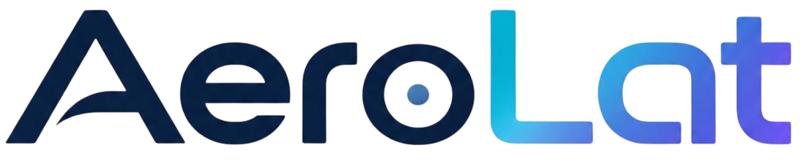
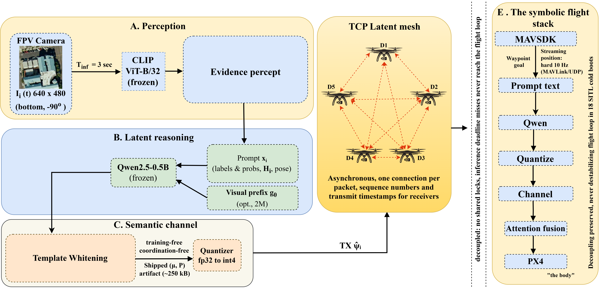

Overview of AeroLat and its key contributions.
Communication in latent space offers an intriguing alternative to symbolic messages for decentralized autonomous Unmanned Aerial Vehicle (UAV) swarms operating over bandwidth-constrained, time-varying wireless links. However, when homogeneous frozen models are prompted with discretized perceptual inputs, their broadcast states collapse toward the shared prompt template. In view of this, we propose AeroLat, a channel-aware latent semantic communication framework that uses evidence injection. The resulting latent states are then passed through an explicit communication model that encompasses bandwidth-limited serialization, additive noise and information staleness, which facilitates a joint assessment of communication fidelity and swarm-level coordination. Across multi-seed simulations, AeroLat provably remains resilient to codec choice, faults and increasing swarm size. It consistently reproduces the latent-swarm anomaly, while no-whitening controls recover the collapse. In particular, AeroLat is capable of reducing false similarity by 97.5%.
Overview of the proposed AeroLat architecture.

Demonstration of the proposed AeroLat system.